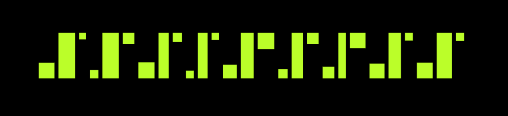
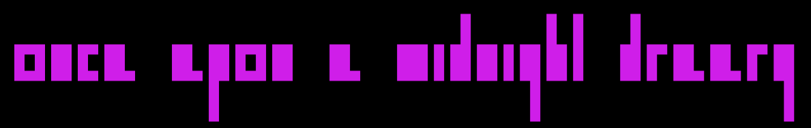

Muriel Type
A computational typeface based on the design language of Muriel Cooper's MIT Press logo design.
Website ↗
Website ↗
[1] The typeface tool: type a word and adjust the x-height, descender height, letter spacing and noise, with the canvas and type colors.
[2] Graphic and motion explorations with Muriel Type.

